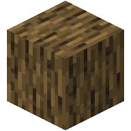

Construire et créer
Construire son univers
Explorer ne suffit pas : tôt ou tard, chaque jouer veut bâtir quelque chose qui lui ressemble. Cela commence par une cabane rudimentaire, mais peut mener à des châteaux gigantesques ou à des cités futuristes. Chaque construction reflète l'imagination de son créateur.

Des matériaux aux possibilités infinies
Certains blocs sont indispensables dès le début :
-

Le bois reste le premier allié. Omniprésent, il sert à fabriquer outils et planches et semble utile à presque tout.
-

La pierre est solide, idéale pour bâtir une base durable.
-

Le fer, plus rare, est une ressource clé pour progresser et ouvre l'accès à des outils plus fiables.
-

Rare et précieux, le diamant, convoité par tous, devient la récompense ultime comme un symbole de réussite.
Ces ressources, si simples en apparence, deviennent les briques d'un imaginaire sans limite.
L'art de la redstone
Grâce à la redstone, Minecraft dépasse la construction esthétique. Elle fonctionne comme une électricité virtuelle, permettant de créer des portes automatiques, des pièges ingénieux, ou même des machines capables de rivaliser avec de vrais circuits logiques. C’est elle qui fait de Minecraft un jeu autant créatif que technique — au point que certains joueurs ont réussi à construire de véritables ordinateurs entièrement en redstone.

Des joueurs ont conçu dans Minecraft de véritables ordinateurs fonctionnels, capables d’effectuer des calculs, d’afficher du texte ou même de jouer à de petits jeux — uniquement grâce à la redstone. Une prouesse d’ingéniosité !
Quand le jeu rejoint le réel
Des joueurs du monde entier utilisent Minecraft pour reproduire des monuments célèbres ou inventer de nouvelles architectures, mêlant styles historiques et créations originales. Cette vidéo, réalisée par le créateur Alpine, en est un bon exemple : il y présente une reconstitution impressionnante de New York, illustrant parfaitement le potentiel créatif du jeu. Certains projets sont si impressionnants qu'ils sont relayés dans la presse, présentés dans des musées virtuels, ou partagés sur des plateformes où des spectateurs peuvent explorer ces mondes pixelisés.